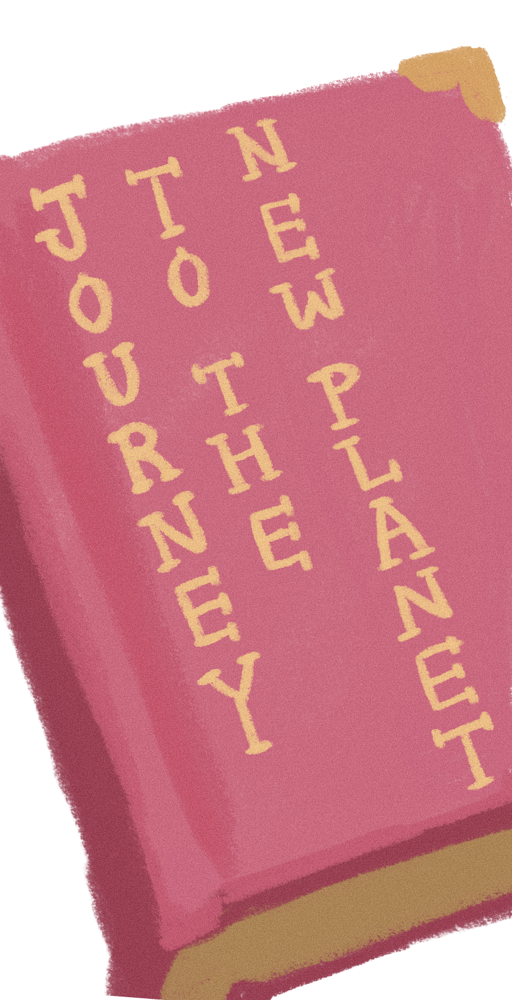
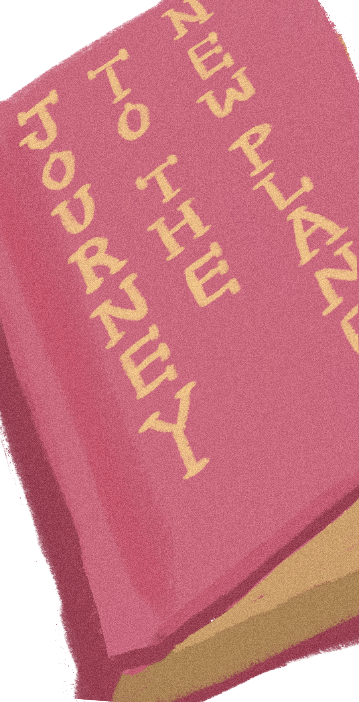
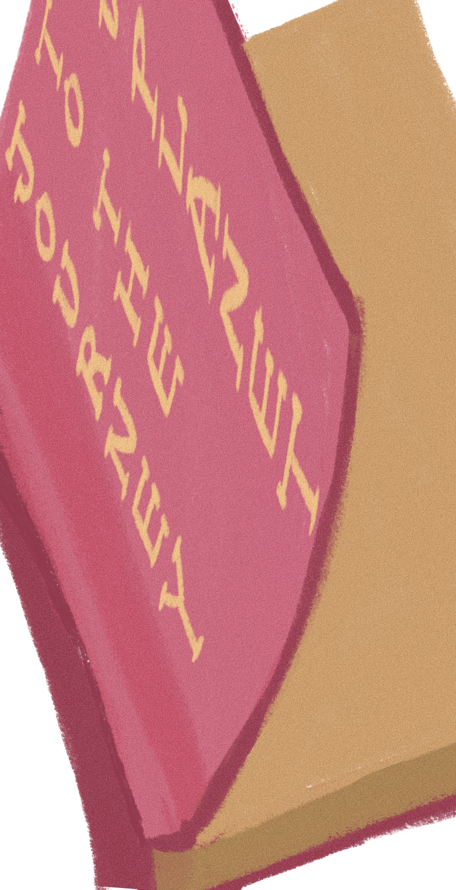

3429년 결국은 망해버린 지구,,
지구를 뒤로 하고 새 보금자리,
외계행성 woolsey 21-C로의 이사를
결심한다! 지구에서 소중했던 짐들을
울지로 던져 보내는데에 성공하면
이사를 할 수 있을 것이다.
하지만 외계행성의 원 주민,
외계생명 울지들의 레이더에
걸리면 소중한 짐이 먹혀버릴테니 조심해!
과연 난 새 보금자리 울지 행성으로
이사하는데 성공할 수 있을까?
나의 짐이 도착한 새 보금자리는
어떤 모습일까?
어떤 짐을 가져갈까?
  